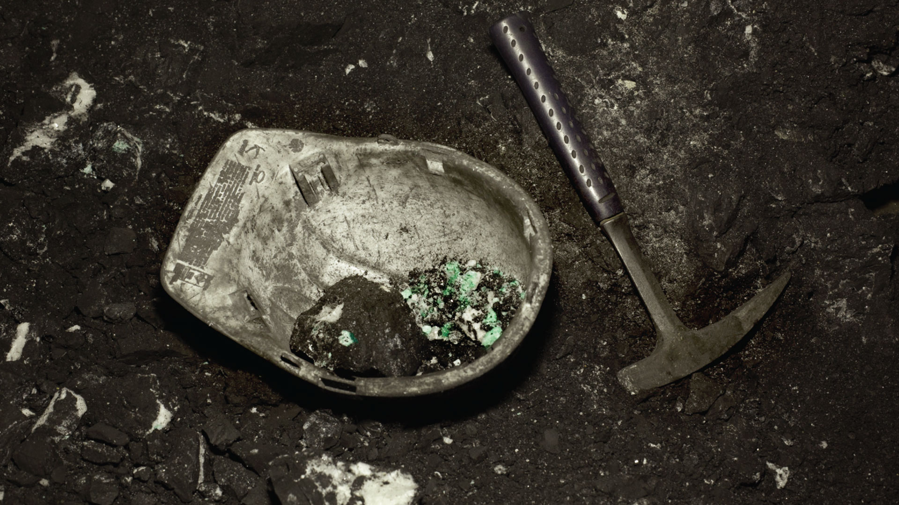
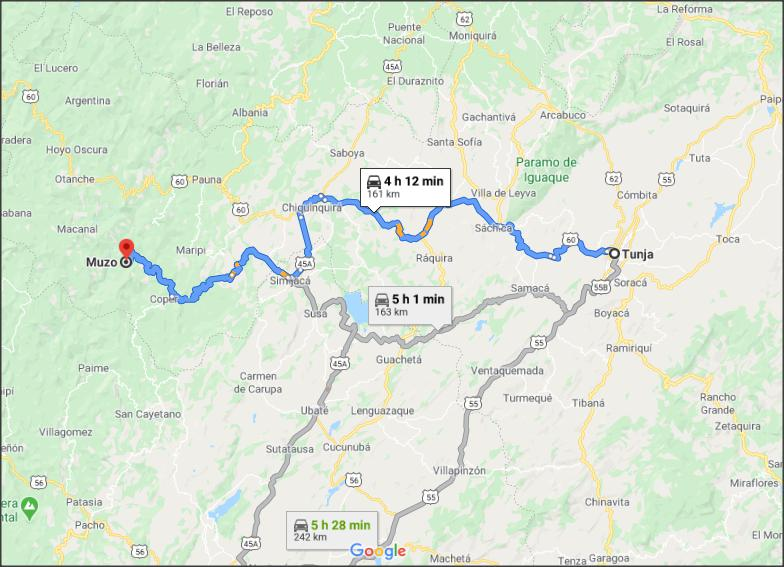

Muzo, pueblo anterior a la conquista, habitado por los indios Muzos tribu muy belicosa, para quienes la guerra era su actividad preferida. Se dedicaban a la agricultura; la que realizaban una vez terminaban su guerras, la minería donde explotaban las minas de esmeralda en forma rudimentaria, las que eran utilizadas como objeto de adorno y trueque entre los clanes. Además de las anteriores actividades, se dedicaban al pillaje que era una forma de apropiarse de aquellos elementos que necesitaban, especialmente asaltaban a su vecinos los Muiscas. Para ser conquistados por los españoles, estos debieron afrontar una cuenta guerra de aproximadamente veinte (20) años, al término de los cuales los lograron subyugar.
Luis Lancheros fue el primer conquistador que entró a someterlos; confiado en su destreza militar pero sin conocer el territorio enemigo que lo esperaba hacia el año de 1.539: Diego de Martínez fue el segundo que fracaso en el año de 1.544. Melchor de Valdez fue el tercer personaje decidido a castigarlos en el año de 1.550. Le siguió Pedro de Ursúa, hombre hábil y valiente, quiso usar la persecución para someterlos, pero sus planes fallaron en 1.551. Finalmente Luis Lancheross con el auxilio de Juan de Rivera derrotó y subyugó a los Muzos en el año de 1.559.
Cuando Pedro de Ursúa hizo su primer viaje a la región de los Muzos en cumplimiento de una orden de la Real Audiencia, fundó en 1.551 una ciudad en aquella región llamada Tudela; en 1.552 los españoles al versen allí solos, sin víveres, sin armas amenazados cada día más para salvar sus vidas, dejaron al pueblo solo aprovechando la oscuridad de la noche, salieron hacia Santa Fé; al día siguiente los nativos bajaron y arrasaron la ciudad. Luis Lancheross en 1.559 sin haber dominado completamente a los indios Muzos, sitiándose enfermo de gravedad por un flechazo en el pecho, considerando que a un no había fundado una ciudad que sirviera de centro de actividad, reunió a sus oficiales y les expuso la idea, como no podía hacerlo personalmente, autorizó a Francisco Morcillo para que la fundase con la posibilidad de trasladarla de lugar.
Al recuperar de nuevo su salud ordeno a Morcillo que fuese a buscar víveres y un lugar propicio para trasladar allí a su Villa, que había bautizado con el nombre de “ VILLA DE LA SANTISIMA TRINIDAD ”. Morcillo siguió el camino de Maripí ( Maripi) al oriente; llegó a las ruinas de Tudela y aquí espero a Lancheros; descansaron varios días para luego abandonarlas por no llenar las aspiraciones de Lancheros; llegando a una hondonada protegida por cuatro ( 4) colinas, a Lancheros le pareció sitio indicado por su buena ubicación cerca de las Minas de Esmeraldas, buena visibilidad, abundantes aguas, buenas tierras y excelente vegetación; fundo la “ VILLA DE LA SANTISIMA TRINIDAD DE LOS MUZOS” en el lugar donde hoy está. Su fecha de fundación ha sido muy discutida. Los cronistas no coincidieron en ella, pero considerando la fecha en que Lancheros empezó su recorrido y las dificultades sufridas, la fecha mas indicada es el 20 de febrero de 1.559, cumplidas las ceremonias acostumbradas se eligieron empleados: fueron los primeros alcaldes Alfonso Ramirez Gasco y Hernán Patiño García; regidores, Benito de Poveda, Antonio Castiblón de Nayla, Alonso de Salinas Francisco Pérez y Juan Alonso.
Lancheros repartió luego solares entre sus colaboradores y encomendó a los indios, es decir anotar que es el único cacerío fundado por españoles directamente en el Occidente Boyacense.
En el Nuevo Reino la evangelización fue simultánea con la conquista, muchos religiosos acompañaron a los conquistadores en sus expediciones. El día de la fundación de Muzo, el capellán Juan de Santamaría dijo la primera misa, comenzó la construcción del templo lo mismo que los conventos de Santo Domingo y San Francisco.
Fue nombrado párroco por el obispo Fray Juan de los Barrios, el párroco ejerció el curato y organizo la evangelización hasta que murió en 1566. Su cadáver fue enterrado en el templo parroquial de Muzo (Reseña histórica tomada de varios libros de consultas entre los que se encuentran “Muzo un pueblo extinguido del Profesor Trinidad Parra y la Primera Revista publicada del Colegio Departamental Mixto San Marcos)
Muzo fue en la antigüedad una villa grande según lo indican las ruinas que a un se encuentran. La tradición de algunos viejos conserva memoria de cinco iglesias y dos conventillos
El municipio de Muzo está ubicado en el Occidente del Departamento de Boyacá y cuenta con una extensión de 154 Km2., se encuentra a una distancia de 157 kilómetros de la Capital del Departamento, Tunja.
La Cabecera municipal se encuentra en el piso térmico templado cuya temperatura Oscila entre 18ºC. Y 24ºC. Su orografía es bastante accidentada, su clima sea cálido húmedo, con un promedio de 24ºC. Registra dos (2) periodos climáticos: 2 húmedos en los meses de abril a junio y octubre a diciembre y 12 periodos secos de enero a marzo y de julio a septiembre. La Altitud promedio de la región es de 815 m sobre el nivel del mar.
El 7 de abril de 1550 se establece en Santa Fe la Real Audiencia, siendo su primer Presidente Andrés Diaz de Venero y Leyva. Según Juan de Castellanos: 'y ansi por el discurso de su tiempo/estuvo prosperissima la tierra/de oro y abundancia de esmeraldas/porque en su tiempo vimos la grandeza/dellas entre los muzos descubierta/aunque cuando se dio la luz primera/fue cuando Lope de Montalvo tuvo/cargo de general por Don Alonso/ por que este caballero intentó/de poblar allí pueblo de españoles/dio con alguna compañía de soldados/poder al capitán Diego Martínez/con los cuales entró por Furatena/ ...'.s En 1544 este capitán entró en territorio de los muzos, con 160 hombres fuertemente armados, por Fura-Tena, junto al río Minero, en cuya cuenca están las explotaciones. En 1550, habría otra expedición hacia la tierra de estos beliciosos indios, siendo comisionado el capitán Melchor de Valdés, con mas de cien soldados y algunos indios chibchas. Pese a la inestabilidad de la guerra Gabriel Limpias, comunica a la Corona, a finales de julio de 1551, la apertura de ocho minas de esmeraldas en Muzo, en la misma Sierra Oriental donde estaban las de Chivor, pero doscientos kilómetros al Sur. 6
En 1559 tenemos los episodios mas dramáticos de la guerra contra los mtizos, luego vendrían otras batallas, pero los españoles iban ganando terreno paulatinamente. Así en 1560, el capitán Francisco Morcillo crea la población de Santísima Trinidad de Muzo (o simplemente Trinidad, en muchos documentos), sobre las ruinas de Tudela, fundada por el navarro Pedro de Ursua en 1550 y abandonada rápidamente por la presión de los indios. Ese mismo año D. Luís Lanchero pasó a gobernar la villa. Poco después, en 1561, Lope de Orozco es nombrado Capitán General y Justicia Mayor de este territorio. Al año siguiente le sucede Alvaro de Cepeda y Ayala.
Según Vicente Restrepo (1884): 'En distintas épocas se dieron ordenanzas de minas protectoras de la propiedad y de los derechos de los mineros, y la solicitud del Gobierno se manifestaba patente, tanto en las 101 relaciones de mando de los Virreyes, como en los numerosos informes que recibían de las provincias'. 7 En este contexto legislativo la Corona realiza una Capitulación de Minas de Esmeraldas con Cepeda de Ayala (Arch. R. Jardín Botánico, Ser. BF, Signo III, 2, 6), aunque desconocemos la fecha. En ella se muestra un mayor interés por estas producciones, señalando de acuerdo con el derecho minero que: 'Se nos den de cinco partes tres y vos habéis de llevaros las otras dos partes libremente, sin pagar dellas quinto ni derecho alguno'. Asimismo se debería informar de la producción a los Oficiales Reales o persona nombrada por el Consejo de Indias, para que se tasasen las esmeraldas en su precio justo, teniendo el Estado la opción de compra hasta dos meses después de la tasa. Asimismo se exige el pago del quinto de 11 esmeraldas traídas por el Capitán. Recordemos que el 28 de septiembre, de 1558, se dictó una Real Cédula, en Valladolid, para que nadie pudiese tener en Indias oro, plata, ni joyas sin quintar (Bibl. Nacional, Mss. 3045, Fol. 168 V.-l70)
.La población iba creciendo en tomo a pequeñas explotaciones. Por eso, elIde enero de 1564, el Virrey Andrés Venero de Leyva informa a S.M. de los beneficios producidos por el quinto de las esmeraldas de estas minas. Sin embargo tendrán que pasar tres años hasta que el Capitán Benito Poveda descubriese la mineralización de Itoco, constituyendo con otros paisanos la primer gran compañía explotadora de esmeraldas de la wna. 8 En 1568, Poveda envía a la Corona dos enormes esmeraldas que fueron tasadas en 24,000 pesos de oro. Es precisamente ese año, en concreto con fecha 6 de mayo, cuando aparecen las primeras Ordenanzas de Minas de Esmeraldas, realizadas por el Virrey Dr. Venero (Mss. Arch. R. Jardín Botánico de Madrid, Ser. BF, Signo III, 2, 6). El dos dejulio se complementaron con unas Instrucciones sobre Quintos Reales. En esta legislación se establece la necesidad de solicitar la demarcación (estacado) de minas ante la Justicia y, antes de tres horas, acudir al Escribano de Minas. Nada mas que aparezcan esmeraldas hay que hacerlo saber al Corregidor (o su Lugarteniente, en ausencia de este) y al Alcalde de Minas, para que se nombre un Veedor y no se eludan los impuestos (quintos). Las esmeraldas sacadas deben pesarse, cada fin de semana, ante el Corregidor y ante el Alcalde de Minas y Veedor de la mina.
Aéreas: TRANSPORTE AÉREO A MUZO
A 30 minutos de El dorado, Bogotá. Para aeronaves hasta de 24 pasajeros.
!SUSPENDIDO¡ Informes ALCALDÏA
Terrestres: Muzo es un municipio colombiano, localizado en la provincia de occidente del departamento de Boyacá. El municipio es conocido por sus yacimientos esmeraldíferos. Se encuentra a 170 km de Tunja la capital del departamento y a 90 km de Chiquinquirá la capital de la provincia
Indicadores:
Consulte: Indicadores del municipio